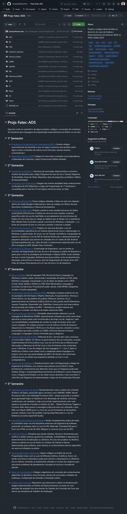

Linguagens de Programação
Experiência prática desenvolvida em disciplinas com linguagens como C, C++, Java, Python, C#, COBOL e JavaScript. Forte base em Lógica de Programação, Estrutura de Dados e paradigmas como a Orientação a Objetos (POO).
Nesta página, apresento um compilado dos principais conhecimentos, linguagens e projetos práticos que venho desenvolvendo durante minha jornada acadêmica no curso de Análise e Desenvolvimento de Sistemas (ADS) na Faculdade de Tecnologia (Fatec).
Todo o código-fonte, trabalhos de Engenharia de Software e evolução contínua estão versionados e documentados no repositório Projs-Fatec-ADS no GitHub.

Experiência prática desenvolvida em disciplinas com linguagens como C, C++, Java, Python, C#, COBOL e JavaScript. Forte base em Lógica de Programação, Estrutura de Dados e paradigmas como a Orientação a Objetos (POO).
Modelagem, normalização e implementação de Bancos de Dados Relacionais e Não Relacionais utilizando linguagem SQL em sistemas como MySQL e PostgreSQL, além da integração com APIs.
Noções sólidas de Engenharia de Sistemas, documentação e modelagem de diagramas UML, uso de Padrões de Projeto (Design Patterns), Metodologias Ágeis e Testes de Software para o ciclo de vida do desenvolvimento.
Uso prático de frameworks e bibliotecas essenciais para o desenvolvimento de aplicações e análise de dados, com destaque para Spring Boot, JUnit (testes automatizados) e Pandas.
Proficiência no uso de ambientes de desenvolvimento e ferramentas de modelagem/simulação, como Eclipse, VSCode, Visual Paradigm, Cisco Packet Tracer, VMWare, ProjectLibre e GeoGebra.
Embasamento multidisciplinar em áreas complementares, incluindo Estatística, Lógica Matemática, Sistemas Operacionais, Arquitetura de Computadores e Redes.
Estruturas de Dados: Implementação do zero de pilhas, filas, listas encadeadas, árvores binárias e algoritmos complexos de ordenação em C e Java.
POO e Interfaces: Sistemas acadêmicos construídos em Java (usando Swing para interfaces gráficas) e C# aplicando conceitos absolutos de herança, polimorfismo e encapsulamento.
Desenvolvimento Web: Interfaces responsivas com HTML5, CSS3 e JavaScript visando componentização e interação com o lado do servidor.
Projetos Interdisciplinares: Trabalhos unindo Arquitetura de Software, Modelagem SQL e Back-end para simular sistemas de gerenciamento realistas aplicados em negócios.
Acessar Repositório Completo no GitHub